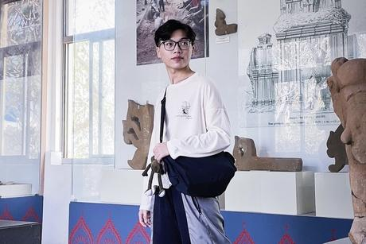
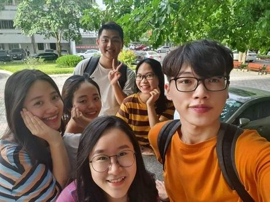
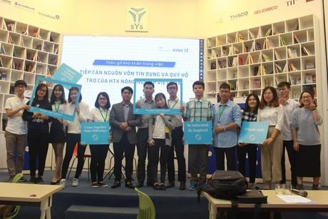

Chàng trai Bắc Ninh là thủ khoa Đại học Ngoại thương
Từng không được gia đình ủng hộ khi lựa chọn Đại học Ngoại thương, sau bốn năm Mai Tiến Thành tốt nghiệp với danh hiệu thủ khoa xuất sắc, đạt 3.97/4.0 điểm.
Đầu tháng 9, Tiến Thành, 22 tuổi, quê Bắc Ninh, liên tiếp nhận điện thoại từ giáo viên và cán bộ Đoàn của Đại học Ngoại thương trụ sở chính Hà Nội, thông báo em tốt nghiệp thủ khoa với điểm số gần tuyệt đối. Cuộc gọi đầu, Thành chỉ nghĩ "chắc là điểm cao nhất khoa". Đến khi được Phòng Quản lý đào tạo của trường thông báo, Thành mới dám tin "mình là thủ khoa K56 của trường".
Từng thi đỗ vào trường THPT chuyên Khoa học Tự nhiên, Đại học Khoa học Tự nhiên, Đại học Quốc gia Hà Nội, Thành vẫn lựa chọn theo học THPT Quế Võ 1, ngôi trường huyện gần nhà. Những năm cấp ba, dù chưa hiểu nhiều về kinh tế, Thành vẫn cảm thấy hứng thú mỗi khi nhắc đến lĩnh vực này. Giữa các trường đào tạo kinh tế hàng đầu, em dành quan tâm đặc biệt đến Ngoại thương vì muốn được tham gia nhiều hoạt động, câu lạc bộ của trường.
Thế nhưng bố mẹ luôn kỳ vọng Thành vào ngành Y Dược. Năm 2017, nam sinh dự thi tốt nghiệp THPT và đạt 29 điểm tổ hợp A00 (Toán, Lý, Hóa). Trong tuần cuối điều chỉnh nguyện vọng, bố mẹ thuyết phục Thành hết lời, còn nhờ cả người thân khuyên em nộp hồ sơ vào trường Dược nhưng không được.
Nhớ lại lúc đó, chính Thành cũng không diễn tả được tại sao lại kiên định như vậy. "Có lẽ em cũng còn chút nổi loạn, ngang bướng của tuổi 18 nên quyết tâm với những gì đã chọn. Sau thời gian căng thẳng, bố mẹ cũng để cho em theo đuổi sở thích của mình", Thành nói.

Mai Tiến Thành, thủ khoa đầu ra của Đại học Ngoại thương trụ sở Hà Nội năm 2021. Ảnh: Nhân vật cung cấp
Trúng tuyển chuyên ngành Kinh tế đối ngoại, Thành có tư tưởng xả hơi sau 12 năm học và quãng thời gian ôn thi tốt nghiệp THPT vất vả. Đến cuối kỳ 1, thấy nhiều bạn giành học bổng với số tiền hàng triệu, Thành trầm trồ. Muốn đặt mục tiêu vào top đầu của lớp để được học bổng như các bạn, nhưng sau kỳ quân sự, Thành thấy "đầu mình trắng tinh". Em không nhớ đã học những gì, bài mới cũng không hiểu. Lo quá, nam sinh mới dồn sức vào học.
Thành rủ các bạn học nhóm, tích cực nhờ những bạn giỏi hơn mình giảng giúp phần không hiểu. Khi biết một số thầy cô cộng điểm phát biểu vào điểm giữa kỳ, Thành hăng hái và hay tương tác, trao đổi với giáo viên hơn. Những phần thầy cô nhấn mạnh hoặc dặn dò "dễ thi vào", nam sinh cũng đánh dấu lại.
Mong muốn ra trường sớm để có cơ hội việc làm tốt, Thành đăng ký học vượt trong năm hai. Thông thường, sinh viên học khoảng 17 tín chỉ mỗi kỳ, nam sinh đăng ký gần gấp đôi. Em học cả ngày, tối đi làm thêm, cuối tuần lại tham gia hoạt động. Tuy lịch học và hoạt động cá nhân không bị chồng chéo, việc cùng làm quá nhiều thứ trong một khoảng thời gian tương đối dài khiến Thành stress và muốn sống chậm lại. Đến năm ba, em chủ động giảm áp lực công việc, học tập, cân đối bằng cách làm việc bán thời gian, tập thể dục thể thao.
Vào Ngoại thương, Thành thực hiện được mong ước từ khi còn học phổ thông là tham gia nhiều hoạt động. Sau khi là thành viên của Câu lạc bộ Nhà tư vấn luật, nam sinh tham gia hỗ trợ hội thảo của Tổ chức sinh viên Luật châu Á, Diễn đàn mô phỏng Nghị viện trẻ. Từ chỗ ít nói, "tan học là về nhà luôn", Thành dần bước ra khỏi vỏ kén, giao tiếp tự tin và kết nối được với nhiều bạn bè hơn trước.

Thành (áo cam) cùng bạn bè tại Đại học Ngoại thương. Ảnh: Nhân vật cung cấp
Hơn ba năm đại học, nhiều lúc Thành thấy áp lực trước những câu chuyện "lương nghìn USD" vẫn hay được nghe kể về sinh viên Ngoại thương, tự hỏi "không biết mình có làm được như vậy hay không?". Nhưng rồi, nhờ vào những cuốn sách mà cô giáo dạy Văn tặng trước ngày vào đại học, Thành cảm thấy mình sống tích cực và lạc quan hơn.
"Em chỉ xác định làm tốt nhất có thể vì mỗi người sẽ có lựa chọn riêng", Thành nói. Với em, danh hiệu thủ khoa vừa là động lực nhưng cũng mang đến áp lực nhất định, nhắc nhở em luôn cần hoàn thiện và phát triển bản thân hơn. Thành hiểu rằng để tiến xa trong công việc, em cần rất nhiều kỹ năng khác chứ không chỉ một danh hiệu.
Nguyễn Thị Phương Thanh, bạn học cùng Thành từ lớp 7 đến khi vào Đại học Ngoại thương, không quá bất ngờ khi bạn tốt nghiệp thủ khoa. Khác với mô tuýp mọt sách, Thành học được và chơi được, biết sắp xếp và cân bằng giữa sở thích với công việc, học tập. "Mỗi khi nghiêm túc theo đuổi mục tiêu nào đó, Thành rất chu toàn nên em nghĩ danh hiệu thủ khoa rất xứng đáng với bạn", Thanh nói.

Tiến Thành (thứ hai từ phải sang) trong một hoạt động ngoại khóa. Ảnh: Nhân vật cung cấp
Từ tháng 7 năm ngoái, Thành đã trúng tuyển một vị trí của bộ phận tài trợ thương mại trong ngân hàng có tiếng, sau chuyển sang khối khách hàng doanh nghiệp. Thời gian tới, em muốn làm việc về tín dụng doanh nghiệp để phát huy kiến thức đã học. Điều tiếc nuối nhất của Thành ở đại học là chưa chú tâm học tiếng Anh. Em đặt mục tiêu khắc phục để có thêm nhiều cơ hội việc làm, tiếp cận với các vị trí tốt hơn.
Trong thời gian ở Đại học Ngoại thương, thỉnh thoảng Thành vẫn bị bố mẹ trêu "Có hối hận không?". Để bố mẹ yên tâm, em thường trả lời "Con có tính toán của mình". Ngày được báo tin tốt nghiệp thủ khoa, mẹ Thành không giấu nổi niềm vui, còn bố vẫn kiệm lời, chỉ chúc mừng ngắn gọn.
"Trở thành thủ khoa không phải để em hơn thua với bố mẹ hay chứng minh lựa chọn năm xưa của mình là đúng. Em nghĩ danh hiệu này cho thấy việc được học và theo đuổi những điều mình thích sẽ giúp em đạt được kết quả tốt đẹp mà chính mình chưa từng nghĩ đến", Thành nói.